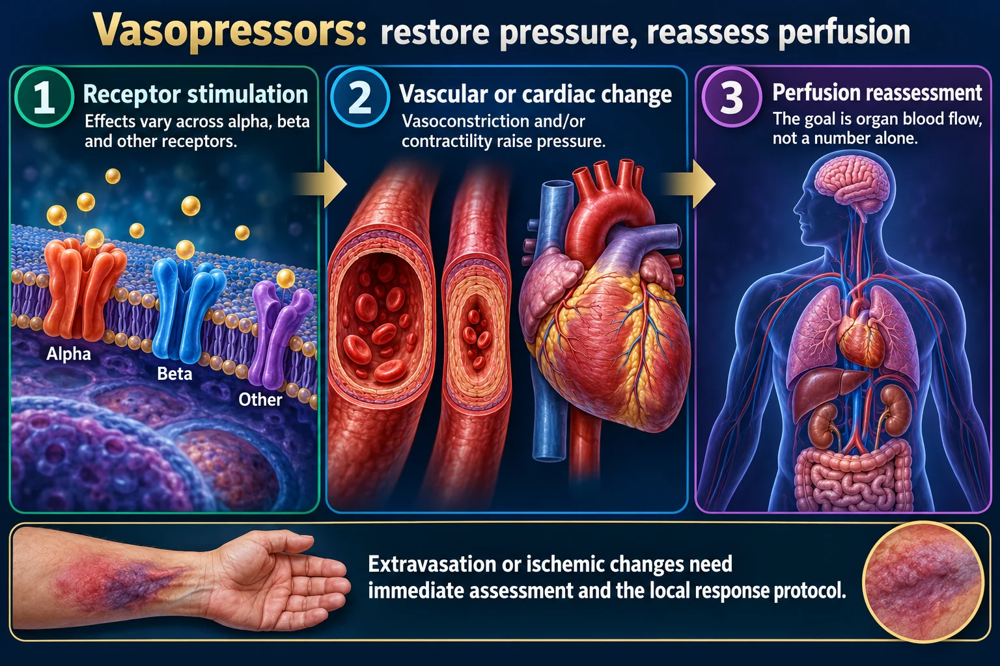

Alpha & beta receptors — the drugs that squeeze
Vaso-PRESS-ors PRESS on the blood vessels, increasing blood pressure in order to squeeze oxygen-rich blood back to the CORE of the body and perfuse the vital organs — sort of like squeezing a toothpaste bottle. They do it by activating alpha & beta receptors inside the heart and blood vessels. Indications: raise the BP · shock · cardiac arrest (ACLS).
📄 Simple Nursing original — opens in Drive →
Four receptors explain every one of these drugs. Learn the receptors and you never have to memorize a drug list again.

Extravasation or ischemic changes need immediate assessment and the local response protocol.
Receptor stimulation
Effects vary across alpha, beta and other receptors.
Vascular or cardiac change
Vasoconstriction and/or contractility raise pressure.
Perfusion reassessment
The goal is organ blood flow, not a number alone.
Monitor continuously
Pressure, rhythm, mentation, urine output and peripheral perfusion.
Infusion safety
Use the ordered concentration, pump and access protocol; inspect the site.
Cause matters
Treat infection, bleeding, pump failure or other causes alongside support.
Relative strengths only — the exact effect of dopamine and epinephrine shifts with the infusion rate. No doses are given here on purpose; always titrate to the ordered MAP goal per protocol.
| AGonists ADD ➕ | ANTagonists are ANTI ➖ |
|---|---|
| Alpha agonist — more constriction → BP UP (vasopressors) |
Alpha-1 antagonist — less constriction → BP DOWN (the “-osin” drugs; phentolamine) |
| Beta agonist — faster, stronger heart; open lungs (vasopressors, albuterol) |
Beta antagonist — slower, weaker heart (beta blockers, the “-olol” drugs) |
| + Chronotropic = more beats/min (chronos = time) + Inotropic = more forceful beats → cardiac output UP |
– Chronotropic = fewer beats – Inotropic = less force |
SOURCE FIX The source lists clonidine as an example of an “alpha antagonist.” Clonidine does lower blood pressure, but it is a central alpha-2 AGONIST — it lowers BP by reducing sympathetic outflow from the brain, not by blocking alpha-1 on the vessel. True alpha-1 antagonists are the “-osin” drugs and phentolamine.
VasoPRESSors PRESS on the vessels. Squeezing narrows the container, so the same volume generates a higher pressure — and blood is pushed inward toward the CORE, where the vital organs are.
The trade-off: the core wins and the periphery loses. Fingers, toes, gut and skin are the tissue you sacrifice to keep the brain, heart and kidneys perfused. That is why you assess extremities every shift on a pressor.
Pick the drug that fixes the broken part. Every choice on this page reconciles with the hypovolemic, cardiogenic and septic shock pages.
Why: blood pressure is a number; perfusion is flow. Vasoconstricting an under-filled circulation raises the number while cutting flow to the gut, kidneys and extremities — you can normalize a MAP and still let the patient die of tissue ischemia.
The exception: cardiogenic shock, where the tank is already overfull — fluid boluses cause flash pulmonary edema. There you support the pump instead.
| Shock | What's broken | First-line drug | Why that one |
|---|---|---|---|
| Septic 🦠 | PIPES — vasodilation + capillary leak, SVR ↓↓ | Norepinephrine after 30 mL/kg crystalloid |
Strong alpha-1 squeeze restores the missing SVR, with modest beta-1 support and fewer tachyarrhythmias than dopamine. Add vasopressin (V1) to spare the dose; epinephrine is an alternative add-on. |
| Hypovolemic 🩸 | TANK — volume is gone | No pressor as primary therapy Volume & blood products |
Nothing to squeeze. A pressor is only a short bridge while blood is being obtained — it never replaces stopping the bleed and filling the tank. |
| Cardiogenic 🫀 | PUMP — contractility failed, preload ↑↑ | Dobutamine (inotrope) Norepinephrine if hypotensive |
Beta-1 raises contractility and cardiac output. If MAP is too low to perfuse the coronaries, norepinephrine holds the pressure. The source card names dopamine and digoxin — both are true positive inotropes and fair game on an exam. |
| Anaphylactic 🐝 | PIPES — histamine dilation + airway swelling | Epinephrine, IM anterolateral thigh |
The only drug that hits all three problems at once: alpha-1 constricts and shrinks swelling, beta-1 supports the heart, beta-2 opens the bronchi. |
| Neurogenic 🦴 | PIPES — sympathetic outflow severed (T6 or above) | Fluids + a vasopressor for tone; atropine for the bradycardia |
There is no sympathetic signal at all, so tone must be supplied by drug. Remember this is the only shock with bradycardia. |
| Cardiac arrest ⚡ | No output at all | Epinephrine (ACLS) | Alpha-1 vasoconstriction during CPR raises coronary and cerebral perfusion pressure. |
SOURCE FIX Desmopressin appears in the source's drug list. Desmopressin (DDAVP) is NOT a vasopressor — it is a synthetic ADH analog selective for V2 receptors, used for diabetes insipidus, nocturnal enuresis and von Willebrand disease. The pressor is vasopressin (V1). The two names look alike and do completely different jobs.
| INOTROPE | VASOPRESSOR |
|---|---|
| Makes the pump squeeze harder (beta-1) | Makes the pipes squeeze tighter (alpha-1) |
| Raises cardiac output | Raises SVR / MAP |
| May lower BP | May lower cardiac output (more afterload to push against) |
| Dobutamine, digoxin, milrinone | Norepinephrine, phenylephrine, vasopressin |
| Dopamine & epinephrine do BOTH — which is why their effects shift with the rate | |
Same four stages as every shock page — mapped to the moment a vasopressor becomes the right answer.
| Stage | What's happening | What you see |
|---|---|---|
| I · INITIAL | Cardiac output falls just enough that cells switch to anaerobic metabolism → lactic acid builds, blood glucose rises. | Nothing. Signs & symptoms are ABSENT in this stage — only a rising lactate gives it away. |
| II · COMPENSATORY | The sympathetic nervous system and renin–angiotensin–aldosterone rescue the pressure: catecholamines, vasoconstriction, ADH and aldosterone hold on to salt and water. | Tachycardia · tachypnea · restless & anxious · cold clammy skin · narrowing pulse pressure · urine < 30 mL/hr. BP is still near normal. |
| III · PROGRESSIVE | Compensation fails. Capillaries leak, acidosis deepens, organs begin to die. | BP drops (MAP < 65) · confusion → lethargy · cold mottled skin · weak thready pulse · crackles · oliguria → anuria · rising BUN/creatinine. |
| IV · REFRACTORY (also called irreversible) | MODS — multiple organ dysfunction syndrome. The body no longer responds to fluids or vasopressors. | Unresponsive · profound hypotension · anuria · DIC · death is imminent. |
These are high-alert drugs. The nursing care is as tested as the pharmacology.
Why phentolamine? The damage is caused by alpha-1 vasoconstriction strangling the local tissue. Phentolamine is an alpha-adrenergic antagonist — it blocks the very receptor the vasopressor is over-stimulating, so blood flow returns before the tissue dies.
Prevention beats rescue: give vasopressors through a central line whenever possible, on a dedicated lumen and an infusion pump, and assess the site frequently.
| Receptor | Adverse effect |
|---|---|
| Alpha-1 🐍 | Peripheral / digital ischemia, gut and renal hypoperfusion, extravasation necrosis, reflex bradycardia, rising afterload the failing heart must fight |
| Beta-1 1️⃣ | Tachycardia >100/min and dysrhythmias NCLEX TIP, increased myocardial oxygen demand — dangerous in an ischemic heart, chest pain |
| Beta-2 2️⃣ | Vasodilation that can drop the diastolic BP, tremor, hypokalemia (K⁺ driven into cells), hyperglycemia |
One rule ties them together: name the broken part first — pump, tank, or pipes — then pick the drug that fixes that part. A pressor fixes pipes. An inotrope fixes the pump. Fluid and blood fix the tank. Nothing else needs to be memorized.